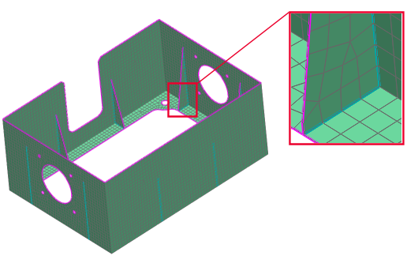

使用单元边命令可查找：
2D 网格中的自由(未连接)单元边。自由单元边是只由一个单元引用的边。例如，在片体内部的自由单元边可以指示模型中未完全相连(缝合)的区域。
模型中的非歧义单元边。非歧义单元边是由两个以上单元面共享的边。当基础几何元素为非歧义元素时，会出现非歧义单元边。例如，在高级仿真中，当您在包含筋板的部件上生成中面时，生成的几何体可能是非歧义的。然后，可以使用缝合边命令确保，在网格划分之前非歧义面已完全缝合在一起。
当您需要在求解之前验证模型中的面完全缝合时，显示所有非歧义单元边的功能会很有作用。检查模型中非歧义面相交的区域时，可以使用非歧义边选项来确认这些相交面上的单元也缝合在一起。
注释：对于 2D 单元，使用单元边命令时，应首先清除网格收集器显示或网格显示对话框中的单元厚度与偏置复选框。厚度和偏置显示会导致单元边命令所用的临时图形难以可视化。
|

|